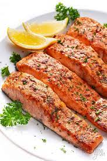

The Best Salmon You'll Ever Have (FRFR)

Delicious, hot, and HEALTHY salmon YOU should be eating right now
Today's recipe is going to be one that you don't wanna miss. Say hello to my favorite sweet salmon recipe. Let's get started, shall we?
In order to make this recipe come to life, you should have a couple ingredients at hand. Make sure you have your salmon, seasoning (I use Badia Complete Seasoning), lemon juice, olive oil spray, and some plates!
Ingredients List
- 4 oz salmon fillet
- 2 tsp seasoning powder of your choice
- olive oil spray
- lemon juice
- barbeque sauce
How to Make the Best Salmon of Your Life
- Preheat your pan at med-high heat with some olive oil spray for a couple minutes beforehand. Gather all your materials. Make sure the chicken is placed in a sizeable bowl so that you can mix your seasoning well.
- Sprinkle your seasoning (around 2-3 tsp of Badia Complete Seasoning) onto the salmon as evenly as you can.
- Use your hands (sanitize them beforehand, obviously) to mix the seasoning well into the salmon. Add in a couple slaps for good measure, if you'd like.
- Place seasoned salmon onto already-warm pan. Should make fierce sheee sparkle sparkle noise once placed.
- Allow salmon to cook. Cover with lid if you please for more even distribution or whatever.
- After 30s-1min, flip salmon. Spread approx. 1tsp of barbeque sauce on your salmon. Put a little bit of lemon juice/lime juice onto salmon as you please.
- Allow salmon to cook for a couple more minutes, or until it is as done as you'd like it.
- Say mama mia!, blow a kiss and enjoy your pescado frrr.